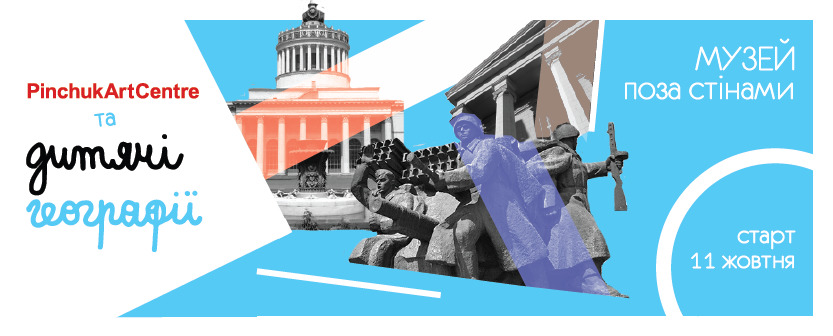

Освітня програма, реалізована спільно з PinchukArtCentre
Ключовий фокус: архітектура, пам’ять, археологія-деміфологізація-переосмислення
Вік: 10-14
Курс мав на меті навчити учасниць і учасників розуміти значення та історію архітектури, міських ритуалів, символів і звичок. Разом з викладачами вони аналізували, яким чином це пов’язано з приватним досвідом жителя сучасного міста. Програма курсу пропонувала розглянути міську культуру як джерело інформації про культуру попередніх епох і принцип ідеологій.
Курс розрахований на виховання візуальної грамотності, а також дослідження художніх стратегій як методу переосмислення дійсності. Ми прагнули перенести ці знання і вміння на дослідження оточення, тому частина зустрічей відбулася за стінами арт-центру.
Курс було побудовано навколо декількох ключових тем:
- Архів у пострадянських містах
- Відновлення історичних лакун
- Відчуження від міського простору через нерозуміння, забування
- Відтворення історії через приватні розповіді і історичні факти
- Мистецькі практики у міському просторі
Викладачки: Валерія Карпань, Юля Соболь, Лора Іщенко, Галя Сухомудь.